Curiosity has no limits.
Explore. Learn. Create. Go further. Curious Works is a student-led initiative bringing exciting, diverse topics to elementary and middle schoolers: the ones they never knew they'd love.
An educational initiative built by students, for students.
Curious Works is a growing collective of high schoolers who design and teach short courses on subjects rarely covered in a typical classroom, from chemistry and Python to trigonometry and business.
We believe the best time to fall in love with a subject is before anyone tells you it's "too advanced." So we build lessons that meet younger students exactly where they are, and then push a little further.
- Live, interactive sessions taught by trained student instructors
- Original curriculum designed specifically for elementary and middle schoolers
- A rotating catalog spanning technology, science, business, and creative thinking
Curiosity-first
Every course starts from a question worth asking, not a standard to check off.
Student-led
Designed and taught by high schoolers who remember what made them curious.
Wide-ranging
From chemistry to Python to calculus: topics chosen for range, not just relevance to a test.
Built to scale
A model designed to reach classrooms and families far beyond where we started.
School answers "what." We chase "what if."
Standard curricula are built for coverage and pacing, not for the tangents that turn a curious kid into a lifelong learner. Curious Works exists to fill that gap.
Exposure over memorization
We introduce ideas, not just facts, so students discover what excites them long before it's a class requirement.
Taught by people who get it
Our instructors are a few years ahead, not a few decades: close enough to make learning feel approachable and real.
A model that scales
We're building Curious Works to grow well beyond one school, one city, or one group of founding students.
A small sample of what students explore
Every course is built from scratch by our instructors, with age-appropriate depth and plenty of room for questions.
Early, but growing fast
Curious Works is a young initiative. These are our real starting numbers, tracked honestly as we scale.